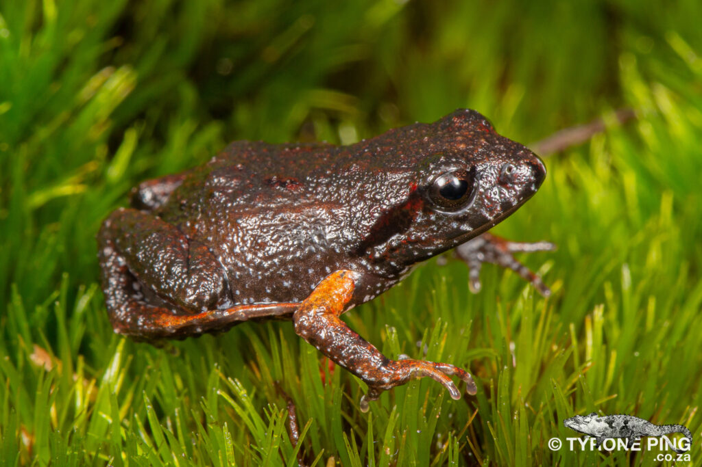
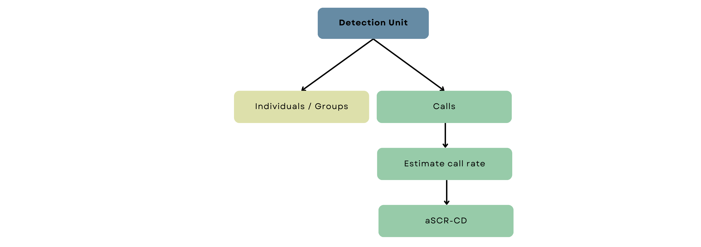
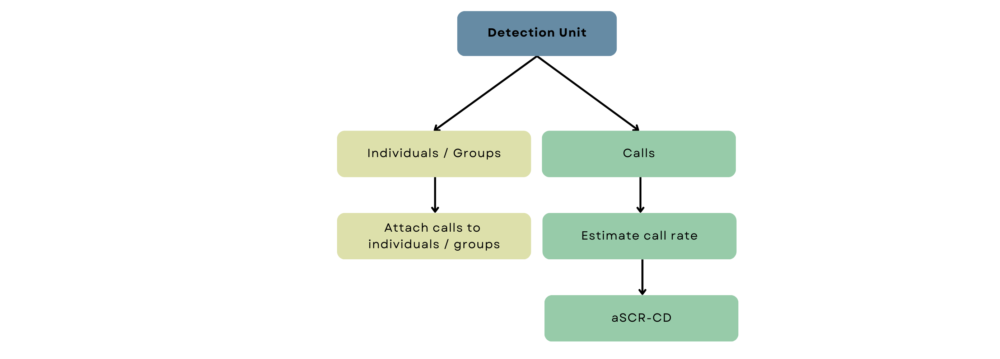

Welcome!
introduction & background
purpose & intended audience
link to report
tutorial structure and outline
words in blue and bold have been defined in the definitions
instructions on how to download package
Introduction
Understanding wildlife populations is super important when it comes to ecological research and conservation. Specifically, knowing how many individuals make up a population allows us to identify significant changes that might lead to extinction, effectively manage populations and motivate for change in policies and behavior. But calculating abundance and density of a population is not that easy, it is nearly impossible to count all individuals in a wildlife population. So over the years, scientists have come up with many different ways to estimate abundance, like plot sampling, removal methods, change-in-ratio, distance sampling, and capture-recapture methods. We then end up with a subset of the actual population otherwise known as a sample.

The last two methods, distance sampling (DS) and capture-recapture methods (CR), are very popular methods. DS typically relies on spotting animals, whereas CR is an analytical framework that can be used in conjunction with a variety of methods for capturing or detecting animals, broadly referred to here as sampling or survey techniques. CR relies on survey techniques that record captures and recaptures of animals and historically, these techniques required physically capturing animals, hence the terminology. In recent decades, however, other cool survey techniques such as camera trapping and DNA sampling have been developed and people have started to use the terms detections and redetections as well. Although which pair is more appropriate depends on the survey technique, people tend to use the terms interchangeably. Throughout the tutorial, we’ll mostly use detections and redetections. Many of these survey techniques, including visually having to identify animals, can sometimes be quite tricky, a bit pricey and even a little risky.
Acoustic surveying on the other hand, is a practical and budget-friendly option that works incredibly well for certain wildlife populations. Acoustic surveying, specifically passive acoustic surveying, involves placing microphones or any kind of self-contained recording unit (also known as autonomous recording devices or ARUs for brevity), throughout a marine or terrestrial environment to record animal calls (sometimes called cues or vocalisations). The collected audio data are then processed using various techniques, such as by expert knowledge, machine learning algorithms, or pattern recognition software, to detect the specific sounds of the species of interest. So naturally, this technique can only be used for animals that are acoustically active and make some kind of identifiable calls. It’s an incredibly useful technique for species that aren’t easy to see but do call often, such as the rare and elusive vaquita species (a really cute porpoise that is in need of some serious conservation) and many other marine mammals. Or animals that aren’t active during the day and regularly call throughout the night, like this dormouse or this brown meagre.
There are other benefits to acoustic surveying too. Weather conditions don’t massively dictate surveying, so a cloudy day won’t hinder your ability to spot an animal. For animals that make loud noises, you’ll likely cover a larger area as you’ll be able to record their calls from far away. Automated data collection is easy to implement as you can simply leave recording devices to do their thing, no need to stay out on the field all day. Recent advancements in algorithmic procedures for noise reduction, call recognition and identification have also made automated data processing more achievable. So, a lot more data can be collected and analysed with acoustic surveying and the more data, the better. Pretty cool right?
Acoustic surveying lends itself towards the CR framework and consequently, CR models have been developed specifically for data collected from acoustic surveys. In this tutorial, we’ll cover these models and how to implement them in R but before that, we need to understand how our ability to detect animals depends on distance.
Summary:
- We need to know how many animals there are in order to effectively conserve wildlife populations
- Two common methods for estimating abundance and density are distance sampling and capture-recapture
- Acoustic surveying is a sampling technique that involves recording animal vocalisations
- Target species must produce calls that are identifiable
- Advantages of acoustic surveying:
- Relatively inexpensive and straightforward to implement
- Powerful survey technique for visually cryptic species that produce loud or regular calls
- Ability to operate independently of light conditions
- Greater spatial range of detectability
- Lends itself towards automated data collection and processing
Probability of detection
In this tutorial, we assume that our wildlife population is closed. This means that during our survey, we assume that no new individuals are joining the population (births or immigration) or individuals leaving the population (deaths or emigration). In other words, we assume geographic and demographic closure. The alternative assumption is that the population is open, requiring a different analysis that has not yet been developed for acoustic surveys.
Regardless of our assumption, a key task is to estimate the probability of detection - the probability that any individual in the population gets detected at all. This is because most surveys of wild populations are inherently imperfect. When estimating animal abundance, the probability of detection helps us know how many animals we did not detect. Knowing the probability of being in our sample enables us to determine the probability of NOT being in our sample. By estimating this probability, we take into account imperfect detection in our analysis, which would otherwise have produced inaccurate results.
Let’s have a look at a traditional capture-recapture analysis with an example.
Example: The Cape Moss Frog
In the Cape Peninsula of South Africa, this nifty little frog lives in leaf litter and among thickly vegetated mountain streams and river banks. It’s the perfect specimen for acoustic surveying because despite the frog being super tiny (about 20-22mm), it can often be heard by its high-pitched call (although some people mistake it for a cricket).

Let’s imagine we want to estimate this frog population’s density and place eight microphones throughout a patch of its habitat (see the arrangement below). Let’s further imagine that we know the locations of the frogs in that patch (click the “Reveal Frogs” button) and that they each made one call. We may or may not detect (record) each of the calls made, and our microphones can detect multiple calls - click the “Survey!” button to see the resulting data collected.
The table below is a data frame consisting of detection histories. Each row is a detection history of a call made and indicates at which microphone the call was recorded. An entry equal to “1” means that the call (i.e. row) was recorded at that microphone (i.e. column), and if not, the entry will be a zero. Click on one of the rows to show you the frog location and the microphones that detected the call. Below the detection history data, you’ll also see the actual number of frogs (\(N\)), an estimate of the overall probability of detection (\(p^*\)) and an estimate of abundance that was calculated as follows:
\[ \text{Estimate of N } = \frac{\text{number of detected frogs}}{p^*} \] In the above formula, we are correcting for the number of frogs we missed by dividing by the overall probability of detecting an individual during the survey - that is, the probability of ever detecting an individual across all the microphones. To obtain \(p^*\), we first calculate the probability of detecting an individual at a microphone (\(p\)) which we can calculate as the proportions of times we detected an individual (i.e. the proportion of 1s in our whole dataset). Then, the probability of missing an individual at a microphone is one minus \(p\). But we have eight microphones, so the probability of missing an individual that many times is: \((1-p)^8\) and the complement of that is \(p^* = 1-(1-p)^8\), the overall probability of detection.
Play around a bit, conduct multiple surveys on the same set of frogs or survey new sets of frogs a few times! You’ll likely notice that our abundance estimate is usually lower than the actual number of frogs. In fact, if you click the “Repeat x 1000” button, 1000 surveys of your current frog population will be conducted and the resulting 1000 estimates will be visualized as a histogram.
Immediately, it is clear the peak of the histogram is relatively far away from the true value, which tells us that most of the time, we’re estimating that a smaller number of frogs exist within this habitat patch. If you’re familiar with statistical terminology, we have shown through simulation that our estimate is negatively biased. We don’t want this! Remember, our example is on a very arbitrary scale. In reality, concluding that your population is much smaller than what actually exists could lead to misleading decision-making and misplaced conservation efforts.
So, what’s happening here? The basic CR model assumes constant detection probability, so essentially, we assume that each call is equally likely to be detected. But is that true? If you have surveyed a few times, you’ll see that frogs closer to the microphones are almost always detected, and frogs within short distances to multiple microphones get detected various times! The calls made by those frogs are more likely (i.e. higher probability of detection) to be recorded than those far away. That means our ability to detect calls depends on distance; more specifically detection probability decreases with increasing distance.
Distance-dependent detection
Let’s focus on one hypothetical population of 25 frogs we’ve surveyed once. We know the locations of all the frogs in our population, so we can measure the straight line distance between each frog and each microphone.

We can plot a histogram of these distances and inspect the frequency of frogs located within certain distance intervals (or bins). For example’s sake, we’ll say that we’ve measured distance in meters. A distance bin is the span of a bar - the first distance bin is from 0 to 10 meters, the second is from 10 to 20 meters and so forth. If you hover over the bars, the frequency of frogs, i.e. how many frogs are within that distance bin, is shown.
One frog is in our first distance bin (0 to 10 meters), five in the second, 12 in the third and so forth. As is, it’s not an extremely interesting graph, but if we add the amount of frogs we detected within each distance bin (Click ‘Add detections’), it starts to become a bit more informative.
We can see that we detected the frog within the first distance bin (so we detected 100% of frogs within 0 to 10 meters of a microphone), and we missed only one frog in the second distance bin. The number of frogs we missed starts to increase as our distance bins become larger until we just didn’t detect any of the frogs anymore. So, as the distances between frogs and microphones become more extensive, we start to miss more and more frogs. In fact, the proportion of frogs detected out of the total frogs gives us our probability of detection within each distance bin (Click ‘Show proportions’). Now, we can clearly see how detection probability decreases with distance!
In reality, we don’t know the locations of the animals we did or did not detect, and we don’t know the exact shape of the relationship between distance and the probability of detection. So, we need to assume what we think these aspects look like. This is where spatial capture-recapture comes in!
Summary:
- Wildlife surveys are imperfect; we will never observe all the individuals of a population during a survey - this is known as imperfect detection.
- For reliable abundance and density estimates, we must estimate the probability of detection (the probability that any individual in the population gets detected).
- Capture-recapture studies produce data in the form of detection histories (or capture histories), where an entry of “1” indicates that the call was recorded and zero otherwise.
- Traditional CR analysis produce abundance estimates that are smaller than what actually exists, which may have serious consequences.
- Assuming constant detection probability is unrealistic - detection probability decreases with distance; the further away an animal is, the harder it is to detect its calls.
- We need to assume the shape of the relationship between distance and detection probability because, in real life, we don’t know the locations of the animals.
Introduction to SCR
In the previous section, we saw that detection probability varies due to the spatial relationship (i.e. distance) between animals and detectors. Traditional mark-recapture analyses overlook this spatial component by assuming a constant probability of detection regardless of the distance between the animal and detector. This leads to inaccurate results, which may have serious consequences. So, some really cool statistical ecologists developed a solution in the form of spatially explicit capture-recapture (SECR or SCR). Sounds very fancy but don’t worry, it’s relatively straightforward, and we won’t go into much (if any) statistical detail.
Survey structure
Before looking at the model structure, it is important that we understand the general structure of SCR data collection. SCR surveys consist of sessions and occasions.
A session refers to a discrete period of time during which specific spatial capture-recapture surveys or parts of surveys are conducted. It encompasses the entire process of deploying detectors at specific spatial locations for a certain duration, detecting/capturing, potentially marking and redetecting/recapturing animals. Different sessions could refer to repeat surveys of the same area or other areas within a larger survey region. The important thing is that no redetections of the same individuals are possible between sessions and if possible, they are not recorded. Otherwise, the sessions are indistinguishable, and occasions are shared between sessions.
An occasion refers to a distinct event or time point within a session when data are collected, i.e. when an individual is detected and/or redetected. Historically, two survey occasions were necessary to capture and mark individuals and then a second occasion to possibly recapture marked and/or unmarked individuals. This is because animals are physically detained by the detectors used, like pitfall traps or cages. So multiple occasions are necessary to have recaptures. In acoustic SCR surveys, redetections of calls can occur between detectors, so it is not necessary to have at least two occasions; a minimum of one is required. In other words, detectors that do not physically hold animals only require a single survey occasion as they typically allow simultaneous detections and redetections.
In the frog example of Chapter 1, every time you clicked the survey button on the same set of frogs, you were conducting an occasion within a single session. If you sampled a new set of frogs, a new session started with new occasions! Now, we are ready to look at the SCR model structure.
SCR components
Spatial capture-recapture models consist of three key components, two sub-models (one for detection probability and one for density) and a mask defining our survey region:

The primary purpose of a SCR model is to estimate parameters, specifically density, of our wildlife population. Mathematically, density is defined as the intensity of a spatial point pattern. Let’s explain these concepts with a simple example. Imagine standing in a field and tossing a handful of marbles onto the ground. The way those marbles land and spread out across the field creates a pattern. This arrangement of marbles on the ground is a spatial point pattern where the points are the marbles. It’s all about how things are distributed and spaced out in a certain area, like a snapshot of where things are located in space.
Now, think about how crowded the field is with marbles. The intensity of the spatial point pattern refers to how many marbles, on average, you would expect to find in a given area of the field. So, if many marbles are close together, the intensity would be high, indicating a dense pattern. On the other hand, if the marbles are more spread out, the intensity would be lower, indicating a more sparse pattern. Intensity helps us understand the overall “busyness” or concentration of points in the spatial pattern. In this context, the points are the locations of the animals, and the intensity of the point pattern is the density of animals.
When we conduct a survey, we collect a sample of the animals and which animals we detect is dependent on the distance between detectors and animals. So to estimate density from our sample, we have to account for the detection process.
Detection function
The first component, the detection function, describes this relationship between detection probability and distance. If we were to plot the shape of the detection function of the basic MR model we looked at in the previous chapter, it would look like this:
It is simply a straight line at whatever we estimated our probability of detection to be (here 0.25). But the histogram of distances we built reveals a more realistic shape of a typical detection function. The shape below is called the halfnormal detection function and is often used in SCR models. The function has two parameters, \(g_0\) and \(\sigma\), which control certain features of the curve.

The first parameter, \(g_0\),
specifies the probability of detection when the distance between the
animal and the detector is zero. The second parameter modifies the width
of the shoulder of the curve. It controls how quickly we drop off to
zero probability of detection. Play around with the values of the
parameters below to see how they affect the shape of the
relationship.
There are many other detection functions as well! If we think the relationship between detection probability and distance looks slightly different, we could specify a different detection function. For example, the hazard rate function includes an additional parameter, \(z\), that …. You can explore other detection functions by selecting from the dropdown list above.
We no longer assume a constant probability of detection; we now have a mathematical model that describes the probability of detection as a function of the distance between detectors and animal locations. We tell the model what we think the shape of our detection function should look like (i.e. halfnormal, hazard rate etc.) and then the model will estimate the parameters of the detection function based on the data we collected. You might be thinking, how do I choose the correct detection function? Well, statisticians have shown that, for the most part, it doesn’t really matter which shape you choose! As long as the shape is reasonable and aligns with what you know about your detectors and target species.
Mask
In the frog example of Chapter 1, we conducted an acoustic survey within a habitat patch with hard boundaries, so our survey region was clearly defined. In practice, habitats are typically more continuous and not so well demarcated. We somehow need to define the area we are sampling from and over which we are estimating density. Let’s think about what we know.
We know that detection probability tapers off gradually with distance, but we don’t know the locations of all the animals we did or did not detect, so we can’t define an exact region. We can however define a distance beyond which we are super confident we definitely won’t detect a call. This distance is called the buffer distance and with the buffer distance, we are ensuring that our probability of detection definitely reaches zero within our sampled area. We can then be confident that we aren’t excluding any of the animals we detected in our sample, and our estimate of density is defined over a sensible area.
Okay, but what to do with the fact that we don’t know the locations of the animals we did or did not detect? The buffer distance helps us to further deal with this. It creates a polygon around our detectors, and within this polygon, our model will try to estimate probable locations of the detected animals based on our detections and re-detections of the same calls across microphones. To do this, we consider all possible locations where an animal might be within the polygon! This area is a set of points (or rather coordinates) that form a “mask” around our detectors and is collectively referred to as a habitat mask. The buffer distance is formally defined as the minimum distance between detector locations and the boundary of the habitat mask.
Play around with the buffer distance below to see how the habitat mask is defined (note the values on the axes as you increase the distance).
The mask can also be modified to more accurately represent the sampled landscape. By incorporating knowledge about specific habitat types or areas unsuitable for the target species, we can refine the mask and exclude regions unlikely to harbour the species of interest. This leads to more accurate density estimates, focusing the analysis on the more relevant and suitable areas for the species.
Density model
The third component models how the animals are distributed throughout space. Here we describe how we think the marbles we threw on the field are spread out - we make assumptions about what the pattern looks like.
The most basic density model consists of only one parameter, density itself, and assumes that animals are spread out evenly across space. In other words, the density of locations is constant throughout our survey region; there is no rhyme or reason to their distribution. Although mostly biologically unrealistic as landscapes are complex and consist of different types of habitats and features, assuming constant density may, in some cases, still provide reliable estimates of average density. For example, assuming constant density over small areas is not unreasonable.
Alternatively, we can specify a model that describes density as varying unequally across space. Animal locations could vary due to, for example, the spatial arrangement of suitable habitats such as vegetation type or leaf litter or a spatial trend across the landscape. In the latter case, we could specify a linear trend or even a quadratic trend in density by modelling density as a function of the x and y coordinates of the specified mask.
Landscape features can be anything we think is an essential determinant of where our target species might be, including things such as the level of noise coming from human settlements or activities. We can then model density as a function of such variables, allowing density to change throughout the survey region accordingly. These features we call habitat covariates, and for every mask point, we have to have a value for the chosen habitat covariate. There are different ways of obtaining data for every mask point, we could have measured at every point, but this is likely unrealistic for very fine and large habitat masks. Alternatively, given a few measured points across the survey region, we could predict the rest using another statistical model (more on this in later chapters).
Habitat covariates can be categorical, such as the forest volume covariate below, consisting of low, median and high levels. In that case, we have three model parameters related to three density estimates, one for each level of forest volume. They can also be numerical, such as noise. Then we get a continuous density surface with a predicted density value for every mask point. Under this model, we have two parameters, a baseline density when noise is at zero and a parameter describing the effect of noise on density. We use the effect parameter to predict the surface you see below.
We’ll look into these parameters’ interpretation in more detail in later chapters. For now, you must understand that we can include habitat covariates in our model to allow density to vary across the survey region.
The underlying principle of SCR is to model the spatial distribution of animals using a predefined spatial density model. This model describes the spatial point pattern of animal locations within the survey region. On the other hand, the detection function describes the probability of detecting an animal based on its distance from the detector. By combining these two components with a habitat mask, SCR models estimate density within a defined survey region while accounting for the spatial variation in detection probability.
Before we move on, let’s ensure we understand some of the core concepts with a quick quiz. You can try the questions multiple times; some may have more than one correct answer.
Summary:
- To combat the issues of traditional mark-recapture models, statistical ecologists developed spatial capture-recapture (SCR).
- SCR models have three key components: detection function, mask and density model.
- The detection function describes the relationship between detection probability and distance.
- The mask defines the area of our study and is a set of coordinates that form a “mask” around the detectors.
- The buffer distance is the minimum distance between a detector and the edge of the mask.
- We describe the distribution of animals through a density model.
- Density can be either constant throughout the survey region or it can be modelled as a function of habitat covariates and spatial trends.
- SCR models combine sub-models for detection probability and density together with a habitat mask and in doing so they estimate density within a defined survey region while accounting for the spatial variation in detection probability.
Overview of aSCR
So far, we have investigated distance-dependent detection and briefly looked over the structure of an SCR model in the context of acoustic sampling. When we use an SCR model for acoustic surveys, we refer to it as acoustic spatial capture-recapture or aSCR for short.
There is an important distinction to make before we can move on to acoustic data analysis. In the frog example of Chapter 1, we assumed each frog made one call so we could equate a detected call with one individual frog. Rarely does an individual, let alone all individuals in a population, call only once during a survey, and it’s not always possible to match calls to individuals. In other words, we can’t typically classify multiple detected calls as belonging to one individual. In that case, our density model describes the distribution of call locations and not animal locations as we’ve described previously. Call locations are simply the location from which a call was made. The aSCR model implemented and the interpretation of the density estimate is different depending on which type of location we are modelling, and that is determined by the detection unit of our study.
The detection unit is simply the thing we record as having been detected. The detection unit is a call if we only record calls and not the animal the call belongs to. If we detect some calls from identified animals, the detection unit is the animals. Animals may further be distinguished as individuals or groups of animals, so we could detect calls coming from individuals or groups of animals.
The raw data that any acoustic survey collects are audio recordings of the calls produced by the wildlife population. The recordings are then typically processed via a computer program to isolate the calls of the target species. For example, there is an open-source software program called PAMGAURD that can be used to identify calls of certain species. This cool technology was first made for studying marine mammal sounds, but it has also been used in many studies to identify the calls of the Cape Moss frog’s croaks. Automated sound identification procedures, including complex machine learning algorithms and statistical models, are complicated and varied. These are not the focus of this tutorial, but if you’d like to know more about detecting and classifying acoustic signals or just the use of passive acoustics in ecological monitoring, this is a cool paper to read.
The recording devices used in acoustic surveys typically also record other information with audio recordings, called metadata. Two common types of extra information are the strength of the received acoustic signal (i.e. the call) and the time that the call was detected, referred to as signal strength and time of arrival data, respectively. So each isolated call may have an associated signal strength and/or arrival time attached to it. We can include these measurements in our analysis to help our model estimate the likely locations of detected calls and, consequently, improve density estimates. We’ll explore this further in the next chapter.
Calling Density
At this point, the data can be analysed on the call level (i.e. with a call as the detection unit) with an aSCR model that models call locations. Consequently, our density estimate is calling density - the number of calls per unit area per unit time. We call this model aSCR-CD for short, where CD stands for calling density.
If we want to convert calling density to animal density, we have to know the average call rate of our target species. We could use the average call rate from previous studies or independently collect data to estimate the call rate ourselves.

Animal (or Group) Density
Identities of animals are never directly observed in acoustic surveys - but if we can match detected calls to individual animals or groups of animals, we can model animal or group locations and consequently, estimate animal or group density directly. Hence the model name, ascr-AD/GD. Our detection unit is then an animal or a group of animals, depending on the nature of the target species.
If you’re confused about the difference between call and animal locations, this will help: in the aSCR-CD model, we assume that animals move around between calls, so each call has a unique location. Under the aSCR-AD/GD model, we assume that the detection units do not move between calls which is another way of saying calls from one animal or group come from the same location.
Data pre-processing starts as in aSCR-CD; we have to isolate the species’ calls from the raw data. However, we have to somehow classify calls as belonging to specific individuals or groups.

This particular aSCR model was developed relatively recently (in 2021), and presently, procedures to distinguish individual animals or groups from acoustic data remain unattainable for most taxa. Even in cases where it is feasible, accomplishing this task demands a lot of hands-on work and may have considerable uncertainty attached to individual identities. Similar to call identification, automated procedures using machine learning techniques are likely to emerge in the near future, and when they do, the aSCR-AD/GD model will be the way to go for density estimation (unless calling density is of specific interest).
Under the ASCR_AD/GD and ASCR-CD model, we assume that all individuals or groups called at least once during the survey and either detect those calls or not. Typically, there is no reason to think otherwise, and we can implement a straightforward aSCR survey and the aSCR-AD/GD model as is to estimate animal or group density.

Animal (or Group) Density with additional data collection
If, however, there are clear reasons why some would definitely not have called even once during our survey occasion, we have to either estimate an additional parameter (similar to the idea of estimating the call rate in aSCR-CD) or adjust our survey structure.
For example, gibbons (Family Hylobatidae) occur in groups that engage in duetted singing; not all groups will sing daily. The singing frequency between and within groups may also differ due to weather-related changes. Typically, a survey occasion is conducted for two hours in the morning, so this assumption is violated because we know not all groups sing in a single day. You might be thinking that why could we not increase our survey length? Well, it is likely impossible to increase it to such an extent that the assumption holds. In this case, making the survey length a whole day would not solve the problem, likely even two or three days either and then we could also likely be violating the assumption of a closed population.
For species like this, we have to do a little bit more. We could either stick with a single aSCR survey and then have to estimate independently the proportion of times individuals or groups call. This requires that human surveyors conduct focal follows of detected groups or individuals over additional occasions to estimate the average proportion of times the units vocalise. Alternatively, we can conduct aSCR surveys on multiple occasions, which requires that individuals or groups can be linked across occasions and that enough occasions are chosen to ensure that each individual or group within the survey region is likely to have called at least once. In Chapter 6, we will look at these methods in more detail.

Putting all of that together, we can see the three main workflows of acoustic SCR determined by the type of detection unit and whether or not we …
The upcoming chapters will cover these analyses. We’ll introduce the R package we will use and implement a simple aSCR model for call locations (aSCR-CD). Then we will look at ASCR-CD when additional information is included in the analysis. Next, we’ll look into implementing the acoustic SCR model (aSCR-AD/GD) when we have scaled our data to the animal or group level and can directly estimate animal or group density (AD/GD). Lastly, we look at the aSCR-AD/GD model when we cannot assume that all individuals or groups will call during a single survey.
Summary:
Spatial capture-recapture models for acoustic data are known as acoustic spatial capture-recapture or aSCR for short.
The detection unit of the survey determines the type of aSCR model used and, thus, the type of density estimated.
When the detection unit is a call, we model call locations and estimate calling density (aSCR-CD).
We model animal locations and estimate animal density (aSCR-AD) when the detection unit is an animal.
When the detection unit is a group of animals, we model group locations and estimate group density (aSCR-CD).
Regardless of the detection unit, the ultimate density estimate is the density of calling animals or groups.
Recording devices can record additional information, such as signal strength and time of arrival associated with the recorded calls.
Under the aSCR-AD/GD model, we assume that all individuals or groups will call during a single survey; if not we have to adjust our survey structure accordingly.
ASCR-CD
We’ll be working with real acoustic data collected a few years back on a population of Cape Moss frogs. This data was gathered by Stevenson et al. (2015), who also authored the paper that details the specific aSCR-CD model we’ll be using. In their survey, they positioned six microphones in a somewhat circular arrangement within the frogs’ habitat. We are using the same 25 second subset of the recording as in the paper which was processed using the program PAMGUARD to identify calls of the frog.
For those curious to visualize the setup, you can check out the arrangement by following this link here. The video not only showcases the microphone configuration but also offers a glimpse into the aSCR method. As you watch, you’ll be treated to audio recordings of the Cape Moss frogs, along with a probable region from which each call likely originated as estimated by an aSCR model.
Introduction to \(\texttt{acre}\)
We’re using a relatively new and slightly unfinished package called \(\texttt{acre}\) (named after the method but also an acre is a unit of measurement). This package is essentially a modernized and improved version of the initial aSCR R package, named \(\texttt{ascr}\). The \(\texttt{acre}\) carries forward the essentials of the previous one but also introduces the animal density model and a range of other capabilities.
For those who have explored other SCR R packages, you’ll find the structure of the \(\texttt{acre}\) package is familiar. Analysis using the \(\texttt{acre}\) package occurs in four distinct phases: First, there’s the Pre-\(\texttt{acre}\) stage, where we prepare our data. Then, we move to the process of \(\texttt{acre}\) formatting, combining our data for further analysis. Following that, we get into the meat of things — model fitting. In the last phase, inference, where we draw meaningful conclusions from our fitted model.
So, in a nutshell, our journey through aSCR analysis involves these four key phases: Pre-\(\texttt{acre}\), \(\texttt{acre}\) Formatting, Model Fitting, and Inference. Each phase plays a critical role in unpacking the insights hidden within our data.

Pre-\(\texttt{acre}\)
The first phase requires modifying the data you have collected so that it is in the required format for use in the \(\texttt{acre}\) package and creating a mask object. Let’s go through each of these.
Captures
The captures dataframe contains our detections. The dataframe must have at least 4 columns, where the first column is called “session”, the second “ID”, third, “occasion” and the fourth column is “trap”. Each row of the dataframe is considered a detection, meaning that each row is a recorded call at a microphone. Our data is already in this format, let’s have a look at it.
head(captures) # shows first six detectionstail(captures) # last six detections
summary(captures) # summary of dataframe
length(unique(captures$ID)) # number of unique calls detectedYou can play around with the dataframe if you want, use functions like tail() to look at the last few detections or try to find out the number of calls detected (see the hint for code).
The “ID” column contains unique identification numbers for all the calls that were detected and the column “trap” contains the number of the detector at which the call was recorded. For example, one call with ID “1” was only detected at the second trap. Call “2” was detected at traps three, four and five. Note that the calls aren’t labelled in the order they were recorded, we’ve just used these labels for simplicity.
Recall from Chapter 3 that one can have multiple survey occasions and that typically, acoustic surveys only need one occasion. If we have multiple survey occasions, the column “occasion” will indicate during which occasion the detection was made. In a similar vein, the “session” column indicates in which session the occasion occurred. We do not deal with multiple sessions or occasions in this chapter, so both columns consists entirely of 1s.
Depending on what your raw data looks like, there are several ways to get to the required form. At the end of this Chapter there is an RScript you can download which contains the full analysis we did here and also some data preparation code for conversion from binary detection histories to the required format.
Traps
The second object, traps, can either be a list, matrix or dataframe and in the context of aSCR, traps refer to the recording devices.
If we had multiple sessions then we would have a list of dataframes or matrices, each containing the Cartesian coordinates of the detector locations. Since we are only working with a single survey occasion, we do not have to worry about the list version of traps right now. For our analysis, the object will be either in matrix or dataframe format. Either way, the object should consists of two columns representing the x and y Cartesian coordinates of our detector locations. Below, we again look at the first six rows and then plot the detector locations.
head(traps)
# plot trap locations
ggplot(traps, aes(x = x, y = y)) +
geom_point() +
coord_fixed() +
xlim(-5, 10) +
ylim(-5, 10) We are using the package ggplot to visualize our data. We supply the dataframe to ggplot() and then we tell it what to plot on the x and y axes within the brackets of \(\texttt{aes()}\), here it is simply the names of the columns of the traps dataframe, ‘x’ and ‘y’. Then we specify that we want a scatterplot with \(\texttt{geom_point()}\), i.e. we want a plot of points and we specify the limits of the axes with \(\texttt{xlim()}\) and \(\texttt{ylim()}\). We’ve changed the x and y limits on the axes so you can see the arrangement clearly. Adding all these things together with a plus sign (note that this notation only works for ggplot code) plots the data.
Mask
The third thing we have to supply is the habitat mask. We create a mask with the function \(\texttt{create.mask()}\) which requires, at minimum, the traps dataframe and a buffer distance.
Quick diversion on the buffer distance
SCR theory has shown that the buffer distance isn’t super crucial as long as it is sufficiently wide to ensure that animals located at the periphery have an extremely low probability of being detected.
A rule of thumb when using a halfnormal detection function is four times its “shoulder parameter”, \(\sigma_{hn}\). We can get a quick and biased estimate of \(\sigma_{hn}\) from our data using the function \(\texttt{RPSV()}\) from the \(\texttt{secr}\) package and multiply it with four to get a buffer distance.
An alternative way is using the function \(\texttt{suggest.buffer()}\), also from \(\texttt{secr}\). This function as its name implies, provides a mere suggestion of buffer distance based our detection data and traps. The methodology behind the function is not well documented and we’re not going to try and explain it here, but we can use this function to get a suitable buffer distance and then check after model fitting whether the distance was wide enough.
To do either of the two methods, we have to convert our data to the \(\texttt{secr}\) format. First we add a column to the traps dataframe called “trap” that contains the trap identification number. Then we create a \(\texttt{secr}\) traps object with the function \(\texttt{read.traps()}\) where we supply the traps dataframe, tell the function which column contains the trap identification numbers and also what type of detectors were used. Recall from Chapter 3 that recording devices and any other detector that does not physically detain animals, are proximity detectors.
Then we create a \(\texttt{secr}\) capture history object with the captures dataframe, the \(\texttt{secr}\) traps object and we specify the format we have used for the captures dataframe. The options are “trapID” and “XY”, where the first option indicates that the last column in the captures dataframe contains the trap identification number where each detection was made (like we have - session, ID, occasion, traps). The other format is if we have the x nd y coordinates of the trap location instead of the number (session, ID, occasion, x, y).
# trap dataframe
traps$trap <- rownames(traps) # add trap column with trap ids
secr_traps <- read.traps(
data = traps, # trap layout data
trapID = "trap", # name of ID column
detector = "proximity"
) # detector type
secr_capthist <- make.capthist(
captures = captures, # captures
traps = secr_traps, # traps
fmt = "trapID"
) # format of captures
# quick and biased sigma
initialsigma <- RPSV(
capthist = secr_capthist,
CC = TRUE
)
round(4 * initialsigma) # suggested buffer distance
# using suggest.buffer()
suggest.buffer(object = secr_capthist, detectfn = "HN")Back to the mask! Below we’ve created a simple mask with specified the suggested buffer distance of 14 metres. We visualize the mask and detectors together with ggplot. Inspect the mask object further, is it a dataframe or a matrix?
# create mask
mask <- create.mask(lightfooti_traps, buffer = 10)
# inspect mask object
head(mask)
ggplot() +
geom_point(data = as.data.frame(mask), aes(x = x, y = y, color = "Mask"), alpha = 0.2) +
geom_point(data = traps, aes(x = x, y = y, color = "Detector")) +
scale_color_manual(values = c("Mask" = "darkgrey", "Detector" = "blue")) +
labs(title = "Habitat mask & microphones", x = "X", y = "Y") +
theme(legend.title = element_blank())# inspect object
class(mask)
str(mask)
# help files
?create.mask()
?make.mask()We can also modify our mask by specifying the spacing between mask points with the argument spacing and we can exclude certain mask points that represent non-suitable habitat using the poly arguments. Have a look at the help file for the function which will point you toward the function \(\texttt{make.mask()}\) from the \(\texttt{secr}\) package.
If you’ve inspected the object, you would have seen that the created mask object is a matrix, we have to convert it to a dataframe if we want to plot it with ggplot. The code is slightly more complicated than the previous plot, we’ve colour coded the points using the arguments color in the aes functions of each geom_point and we’ve assigned a color to each using the \(\texttt{scale_color_manual()}\) function. Lastly, a title is added and the legend title is removed.
\(\texttt{acre}\) formatting
In the next phase, \(\texttt{acre}\) formatting, we supply all the objects from the first phase to a key function of the package called \(\texttt{read.acre()}\). This function creates an object of class “acre_data” and essentially links together our detectors and detection data. Any other data objects we need for model fitting is also included here.
The first three arguments of this function are the three objects we created in the previous phase. If we have any habitat covariates we want to include in our density model, we also supply it here in the argument loc_cov. The argument takes a dataframe consisting of at least three columns, the first two are x and y coordinates of where the habitat covariates have been measured and the remaining columns contain the covariate values. For example:
example_loc_data <- data.frame(
x = c(-20, -20, -20, 2.5, 2.5, 2.5, 25, 25, 25),
y = c(-20, 5, 30, -20, 5, 30, -20, 5, 30),
noise = c(6, 10, 11, 7, 12, 10, 11, 9, 8),
forest_vol = c("high", "high", "median", "median", "median", "low", "low", "low", "low")
)
head(example_loc_data)Remember we mentioned in Chapter 3 that we typically don’t have covariate values for every mask point and that given a few measured locations (like in the dataframe above), we can impute the rest. This will happen in the model fitting phase, the habitat covariates will be scaled to the mask level, i.e. every mask point will have an associated covariate value (more on this below).
However, if we don’t have any habitat covariates but we do want to model density with a spatial trend (i.e. as a function of the x and/or y coordinates of our mask points) we have to do the following. You can include a random subset of x and y coordinates pairs (like the example above) or all the mask points, but because the function expects a dataframe with more than two columns, we add a random column that won’t be used.
Below we create a dataframe called “cov_data” that contains the coordinates of all the mask points and a random column called spat_trend where every entry is just “yes”. It really doesn’t matter what this column is, we just need a third column. We then supply the dataframe together with the captures, traps and mask object to the \(\texttt{read.acre()}\) function.
cov_dat <- data.frame(x = mask[, 1], y = mask[, 2], spat_trend = "yes")
lightfooti_data <- read.acre(
captures = captures,
traps = traps,
mask = mask,
loc_cov = cov_dat
)
# alternative mask creation
# lightfooti_data <- read.acre(
# captures = captures,
# traps = traps,
# control_create_mask = list(buffer=10),
# loc_cov = cov_dat
# )The commented lines of code show the second way in which we could have created the mask. Instead of using the argument mask, we supply the arguments of the \(\texttt{create.mask()}\) function as a list to the argument control_create_mask.
Some other arguments and important points:
The default units for the \(\texttt{acre}\) package is metres and seconds. If our data are not in metres and seconds, we can specify in the units_convert_dist and units_convert_time arguments the number needed to convert from whatever our data is in to meters. For example, if our data is in minutes, then we assign the value 60 to the argument units_convert_time. Likewise, if our data are in cm for some reason then we assign the value 0.01 to units_convert_dist.
If we have reason to believe that there are other factors that influence the detection probabilities of individual detectors, we can supply a dataframe containing the trap specific information to the argument trap_cov.
Similarly, if we had multiple sessions and we have quantified some information about the different session that might influence our model estimates, then we can supply this data to the argument session_cov.
Typically we don’t have covariate data for every point in our habitat mask but rather only a few select points in the survey region. We can use the information we have to impute data for the rest of the mask. The \(\texttt{read.acre()}\) function does this for us using a machine learning algorithm called Approximate Near Neighbor. Essentially, this method calculates the likely value of each mask point based on the values of a specified number of nearest points with measured covariate values. We can modify some of the parameters of this method if we want, but this is beyond the scope of this tutorial (have a look at the function help file for more details).
Model fitting
Finally, we are ready to fit some aSCR models! We have gone through the first two phases, getting our data objects ready and putting them all together with the \(\texttt{read.acre()}\) function. Now, we use the key function, \(\texttt{fit.acre()}\), to fit the aSCR model.
The first argument of the function (dat) is the acre_data object we created with the \(\texttt{read.acre()}\) function. Then, we tell the model what our density model is with the par_extend_model argument. The default is to assume constant density which is specified as “D~1”. The notation reads as Density (D) is (=) a function of (~) whatever comes next. The model formulas for the examples we looked in Chapter 3 were specified as follows (plus some other trends):
East-west trend: D = ~ x
North-south trend: D = ~ y
Linear trend: D = ~ x + y
Quadratic trend: D = ~ x^2 + x*y + y^2
Density as a function of noise: D = ~ noise
Density as a function of noise: D = ~ forest_vol
In the above, x and y, are the mask points and “noise” and “forest_vol” are the habitat covariates which should correspond to the column names used in the dataframe assigned to the loc_cov argument of the \(\texttt{read.acre()}\) function.
Then, we tell the function which type of detection function to fit to the data in the detfn argument. For example, if we specify the halfnormal detection function, we assign the character string “hn” to argument. There are other arguments which we have not covered here. These are all optional arguments and the ones we have presented are required for model fitting. Let’s fit a simple model using the objects we have created so far.
Below we fit a constant density model and a halfnormal detection function to the frog data and call the model, “model1”. We don’t have to specify the density model in the par_extend_model argument as we are using the default model. The detection function parameter, \(g0\), is fixed at one, since we expect that all calls made exactly at the detector locations will be recorded. Straightforward and easy right?
model1 <- fit.acre(
dat = lightf_data,
detfn = "hn",
fix = list(g0=1)
)Inference
Now that we have fitting some models, we can look at the model estimates. Extracting information from our model object is not different from any other model objects you might have used before. We’ll begin with model1. We can use the \(\texttt{summary()}\) function the look at a summary of our model estimates:
summary(model1)The output tell us the detection function used to fit the model, the number of sessions, whether or not extra information was inputted into the model and the method use for constructing confidence intervals of our estimates. Below that we get a neat table of our model estimates and associate variance estimates.
For each parameter of our model, we obtain an estimate, a standard error, and two additional values under the columns labeled “2.5%” and “97.5%.” These values define a confidence interval for our estimate. While we assume you have some familiarity with these concepts, we offer a brief explanation here. Alternatively, if you need more information, you can refer back to the welcome page where we provide additional resources.
Quantifying the uncertainty of our model estimates is crucial. When conducting a survey, we collect a sample to estimate population-level parameters (e.g., density). However, due to random differences between samples, our estimates will vary from one sample to another. The standard error serves as a measure of the variability or precision of an estimate. It tells us how much the estimated parameter is expected to differ across different samples. Smaller standard errors are preferable, as they indicate less variability and increased precision.
A confidence interval is a range of values calculated from the sample data that surrounds a single estimate. This interval provides a range where the true population parameter is likely to fall under repeated sampling. For instance, a 95% confidence interval for a mean suggests that if you were to repeatedly draw samples from the same population and compute confidence intervals each time, the true population mean would likely be within that interval about 95% of the time. In simpler terms, we can express 95% confidence that the interval contains the true mean. A narrower interval is better, just like a smaller standard error, as it reflects reduced variability and greater precision.
The following bit is really important. In the aSCR-CD model, these values are not reliable. Understanding the underlying statistical and mathematical concepts is necessary to grasp the reason behind this limitation, and we have intentionally avoided delving into these complexities. If you’re interested in learning more, we recommend reading the paper by Stevenson et al. (2015) for a comprehensive explanation of the model formulation and assumptions. However, for the purposes of this tutorial, what’s important to know is that we cannot trust the estimates of standard errors and confidence intervals derived from fitting an aSCR-CD model.
To obtain appropriate standard errors and confidence intervals, we need to use a different function. The \(\texttt{boot.acre()}\) function employs a technique called “bootstrapping” to calculate standard errors and confidence intervals of our estimates that can be reliably reported. In this process, we simulate a synthetic population using our model and generate samples (detect calls) from this population using the estimated detection function. We then fit the same model to this simulated data and record the model estimates. This procedure is repeated numerous times, allowing us to compute the standard error and establish confidence intervals as we’ve essentially done the repeated sampling! Bootstrapping is an extremely useful statistical method, here is a fun video explaining the method further if you want to know more.
The number of times we perform this procedure (controlled by the argument N) ideally exceeds 100 repetitions, and in practice we would likely opt for more iterations, such as around 1000. This can take super long to run, so we’ve already done it and saved the output as model1_boot. However, if you’re interested, you can carry out this procedure for a smaller N value, say 10. Alternatively, explore the structure of the model1_boot object using the \(\texttt{str()}\) function or by typing the object name followed by a dollar sign ($) to examine its contents.
# boot_N10 <- boot.acre(model1, N = 10)
str(model1_boot)model1_boot$ There is a lot going on here! Luckily for us, we don’t have to delve into all of these. To obtain the standard errors, we simply apply the function, \(\texttt{stdEr()}\), to our bootstrap object. To make sure we are using the function from the correct package, we use the following notation \(\texttt{acre::stdEr()}\).
We extract the confidence intervals using the function \(\texttt{confint()}\) and specify the argument type as “fitted” to ensure our confidence intervals are on the same scale as our estimates. Why we have to do this will become clear later.
acre::stdEr(model1_boot)
confint(model1_boot, type="fitted")Viola! We now have appropriate standard errors and confidence intervals. Let’s go back to the model output. The parameters of the detection function, \(\sigma\) and \(g0\) were estimated to be roughly 5.92 and 1, respectively. We fixed \(g0\) at one, so that’s to be expected. We can use the function \(\texttt{show_detfn()}\) directly with our model object to plot the estimated detection function.
summary(model1)
show_detfn(model1)A similar function, \(\texttt{show_Dsurf()}\), will plot the estimated calling density surface in number of animals per hectare - try it out. It’s not very informative as we’ve specified constant calling density, so density remains the same across our survey region.
show_Dsurf(model1)Remember the estimate of density we get here is calling density - the number of calls per metre squared per second. In our model, average calling density was estimated to be approximately 3607 calls per metre squared per second. That’s a lot of calls!
If we want to convert calling density to animal density, we need to know the call rate of the species. We can use estimates of the average call rate from previous studies or we can collect independent data to estimate it ourselves. For the latter, you’d have to monitor a different sample of frogs separately from the main aSCR survey to collect several call rate estimates and take the average of those.
For the frog data, the authors collected eight such samples and calculated the call rate for each sample. The call rate is taken as the number of calls made per second. To obtain an estimate of animal density, we divide the estimated calling density of 3607 with the average of all the calculated call rates.
In the code below, we use the dollar sign notation to extract a numeric vector containing all the parameter estimates. You can ignore the estimates with suffixed with “_link” for now. The density estimate is the fifth element and we extract it to calculate animal density.
# call rates
call_rates
# model contents
model1$coefficients
# animal density
(D_animal <- model1$coefficients[5] / mean(call_rates))
# convert to per hectare
D_animal/10000 We estimated roughly 532682 frogs per metre squared throughout our survey region, quite a big number! Remember these frogs are super super tiny so this number is too crazy. To make it a bit more digestible, we can convert to per hectare by dividing with 100000 to get 53 frogs per hectare.
Exercise: Non-constant density
Let’s also fit a model with a spatial trend in density.
First, we’re going to create a new acre_data object which includes the call rates we used previously. By doing this, our model will automatically convert our calling density estimates to animal density. We could have done this for model1 as well, but we thought it would be good to understand first how the calling density is converted to animal density.
lightfooti_data2 <- read.acre(
captures = captures,
traps = traps,
mask = mask,
loc_cov = cov_dat,
cue.rates = call_rates
)Below we fit the model with a spatial trend in density. The only new thing is the par_extend_argument which requires that you put the density model in a list.
model2 <- fit.acre(
dat = lightfooti_data2,
detfn = "hn",
par_extend_model = list(D=~x),
fix = list(g0 = 1)
)Note, we’ve fitted this model purely for demonstrative purposes. There is no real justification for specifying an east to west trend.
Do the same post model fitting analysis (i.e. inference) for model2 with the spatial trend.
Tasks:
- Look at the model summary and plot the detection function.
summary(model2)
show_detfn(model2)You’ll likely have noticed that the model output is a bit different. The detection function parameters remain the same as expected (we haven’t changed anything). We have two parameters relating to density: “D.(Intercept)” and “D.x”. These are the parameters we briefly mentioned in Chapter 3 when we looked at the different density models.
When we include habitat or spatial covariates in our density model, \(\texttt{fit.acre()}\) automatically models density as a function of these variable using a generalised linear model. If you’d like to know more about this statistical method which is super straightforward and easy to understand, have a look at the resources in the welcome page. For now, all you need to know is that the intercept parameter represents the average calling density when the habitat covariate is zero, i.e. when the x coordinate is equal to zero. Whether or not this is useful information depends on the habitat covariate, here it’s not very informative. The default for the regression model, is to use the so-called log link function. In other words, the log of calling density is modelled as a function of the covariates. We can convert the parameters back to its normal scale, by exponentiating the parameter values.
exp(model2$coefficients[5]) # intercept
exp(model2$coefficients[6]) # effect The intercept parameter is pretty much the same as the animal density we calculated using model1. This is expected as the intercept is the average density across our survey region when the covariate has no influence, just like when assuming a constant density model.
The second parameter, “D.x”, is the expected change in animal density per one unit increase in the habitat covariate. Our model estimated that, on average, animal density increased by roughly 1 frog per square metre per second for every one metre increase in the x direction.
- Obtain appropriate variance estimates using the bootstrap procedure using N = 10 and save the output as “model2_boot”.
model2_boot <- boot.acre(model2, N = 10)
acre::stdEr(model2_boot)
confint(model2_boot)- Plot the estimated calling density surface. The default when we’ve included call rates in our acre_data object is to plot animal density per sqaure metre, use the argument scale with the value 0.0001 to convert to per hectare.
show_Dsurf(model2, scale = 0.0001) # per hectare Nice! Our density surface is reflecting the spatial trend we specified. The model estimated that animal density increases from east to west. This increase seems slight which corresponds to the small effect of an increase of 1 animal per square metre.
A possibly big note of caution:
When fitting aSCR-CD models, meaning we are modelling calling locations, fitting a non-constant density model may be misleading. Areas where many calls are estimated to come from could be due to two things: there could be a lot of animals calling but there are also could be a few individuals making a lot of calls. So when converting from calling density to animal density, areas of high animal density could possibly be due to a small number of acoustically active individuals.
Summary:
Analysis using the \(\texttt{acre}\) package has four phases: pre-\(\texttt{acre}\), \(\texttt{acre}\)-formatting, model fitting and inference.
Make sure all the distance and time related objects are in metres and seconds or provide the values necessary for conversion in the \(\texttt{acre}\)-formatting phase.
In the first phase we create three objects: captures dataframe with four columns (session, ID, occasion and trap), a traps dataframe containg the coordinates of our detector locations and a habitat mask.
Then we combined these objects into an “acre_data” object with the function \(\texttt{read.acre()}\) in the second phase.
Model fitting uses the function \(\texttt{fit.acre()}\) which requires the acre_data object, the specified detection function and we also specify the density model.
After model fitting, we look at the estimates, the detection function and density surface in the last phase.
When the detection unit is a call, the variance estimates we get after model fitting are not reliable so we have to use bootstrapping to obtain reliable standard errors and confidence intervals.
We can get a suggested buffer distance when using a halfnormal function with the \(\texttt{suggest.buffer()}\) function from the package \(\texttt{secr}\).
Definitions
Abundance is the number of individuals in a population or community.
Change in Ratio methods infer animal abundance from observing changes in proportions of certain sub-classes of the wildlife population like … . after removing a known amount of individuals from the population.
Density refers to the number of individuals within a certain area or volume. In the context of wildlife populations, it is typically used to describe the number of individuals per unit area.
Distance sampling is a statistical method used in ecology to estimate the abundance or density of a population by collecting data on the distances between observers and the individuals they detect.
Capture-recapture is an analytic framework to estimate abundance and density of wildlife population which relies on captures (or detections) and recaptures (or redetections) of individuals in a population. The analytic framework can be applied to many different survey techniques.
Passive acoustic surveying is when specialized microphones are used to record animal vocalisations. Contrast this to active acoustic surveying where sound sources ….
Plot sampling entails dividing up a landscape into sampling units such as plots (or quadrats) or strips and counting all individuals of the target species within the sampling units.
Removal methods rely on systematically removing groups of individual (i.e. samples) from the population and deriving abundance from the reduction in the amount of individuals removed over time.
Survey in the context of SCR refers to the structured event of going out and placing detectors in a predefined arrangement and for a certain amount of time in order to collect data on a wildlife population.
Survey (or sampling) technique(s) are methods used to detect/capture/record animals in the field. This includes techniques such as camera trapping, DNA sampling, visual observation and many more. In the context of acoustic surveying, this involves placing microphones in a habitat to record the vocalisations of a specific species.
Self-contained recording unit is a type of sound recording device used in passive acoustic surveying that is designed to record animal vocalisations. It is typically designed to be left in the field for extended periods of time and may be powered by batteries or solar panels, are often equipped with weather-resistant and durable housing to protect against the elements and wildlife.
Closed population a group of individuals or entities within a defined area or system that remains constant over a specific period, meaning that no new members are added, and no existing members leave or die.
Probability of detection is probability of observing a detection unit. For example, the probability of hearing a call if call is the detection unit, or the probability of detecting and animal (or group) if animal (or group) is the detection unit. There are various kinds of detection probabilities in SCR surveys, even for a single kind of detection unit. For example, there is the probability that a single detector detects a detection unit, and the probability that any detector in an array detects a detection unit, (a larger probability, obviously), and the probability that a detector makes a detection GIVEN the location of the animal, and the probability that certain detectors detect a detection unit while others don’t (the probability of a particular “detection history”).
Imperfect detection is a widespread phenomenon in ecological studies and refers to when the probability of detection is less than one. In ecological surveys, it is almost always impossible to observe or detect all individuals of the populations due to either the specific sampling technique, human error or other factors. Imperfect detection can lead to biased or incomplete results and requires specialized statistical methods to account for the uncertainties introduced by the incomplete observations.
Detection histories contain the detections and re-detections of calls across detector arrays. Usually contained in a dataframe with rows equal to the number of calls detected and a column for each detector.If a call was detected at a microphone, the corresponding enrty contains a “1” and if not, a zero.
Buffer distance is the minimum distance between detectors and the edge of the habitat mask. The distance should be large enough to plausibly include all detected animals.
Constant (or homogenous) density refers to when animal locations are evenly spread out throughout the survey region.
Detection function refers to the mathematical model used to describe the relationship between distance and detection probability, where distance is the distance between detectors and detected animal locations.
Habitat mask is set of coordinates that form an area covering the detectors in an SCR survey. The extent of the mask is determined by the buffer distance.
Non-constant (or inhomogenous) density refers to when animal locations are NOT evenly spread out, but occur in regions of varying density across the survey region.
Spatial capture-recapture (SCR) is a statistical model for estimating animal abundance and density from capture history data. SCR models combines a model for the distribution of animals in space with a model for detection probability. By jointly modelling these aspects, SCR produce reliable density estimates.
Detection unit
Animal density
Group density
Calling density
Signal strength
Time of arrival